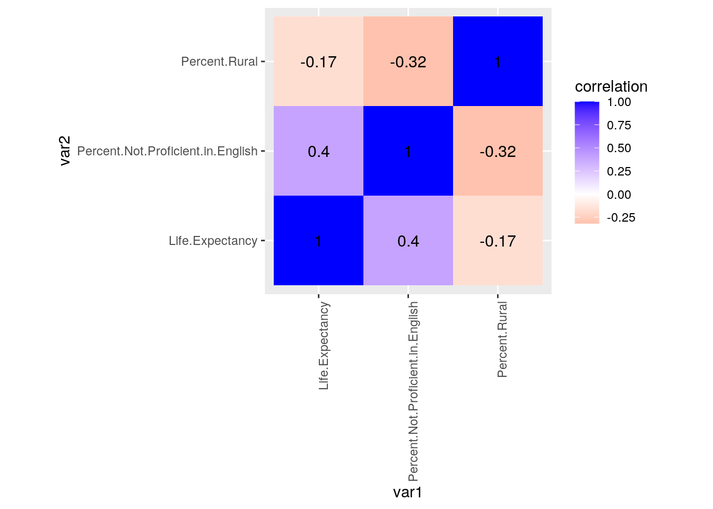
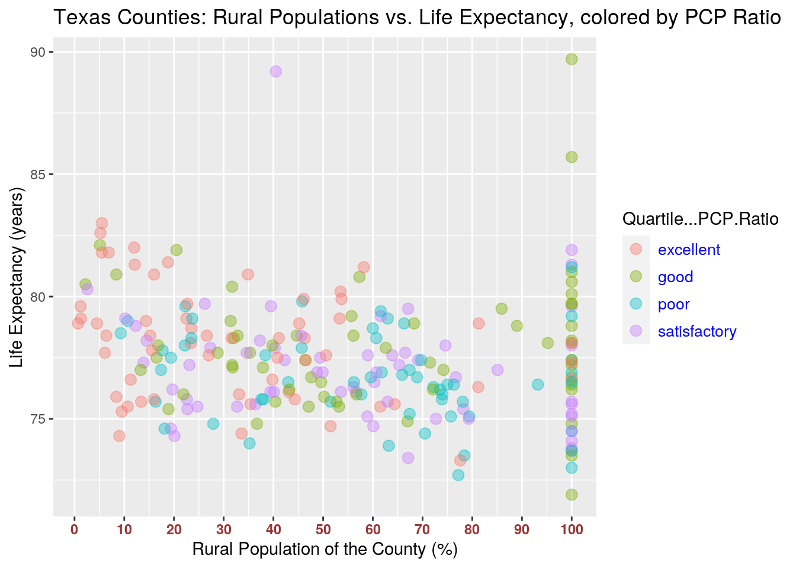
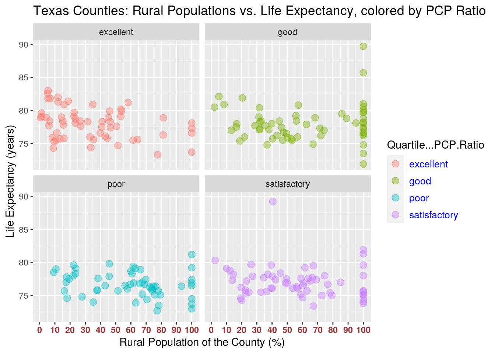
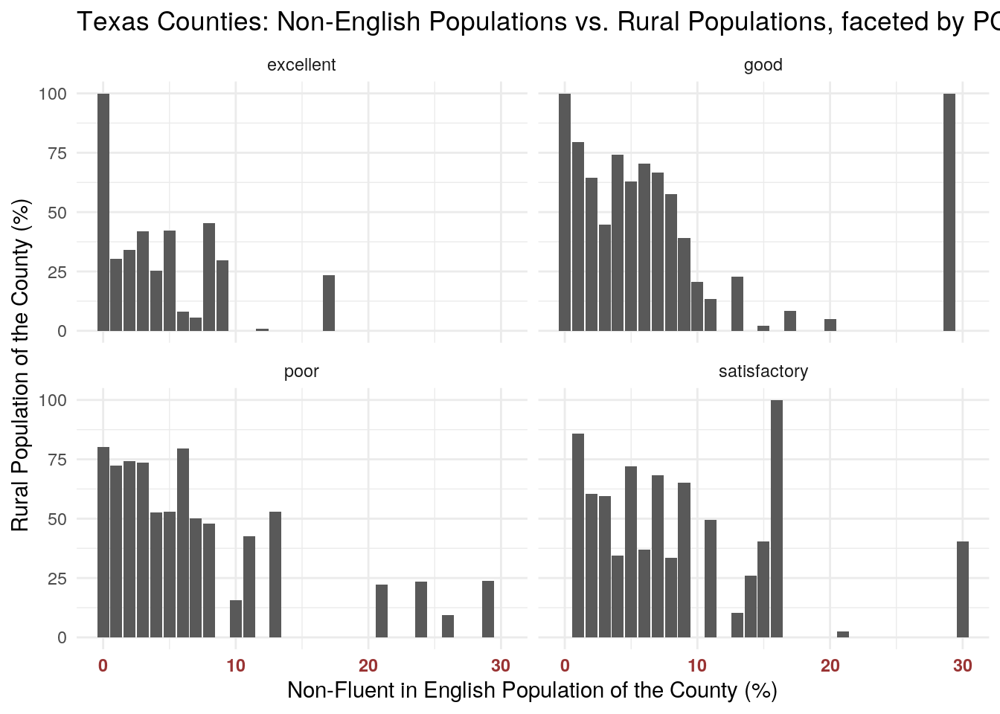
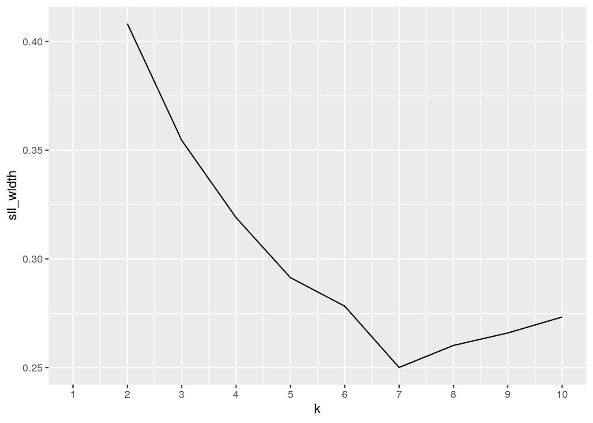
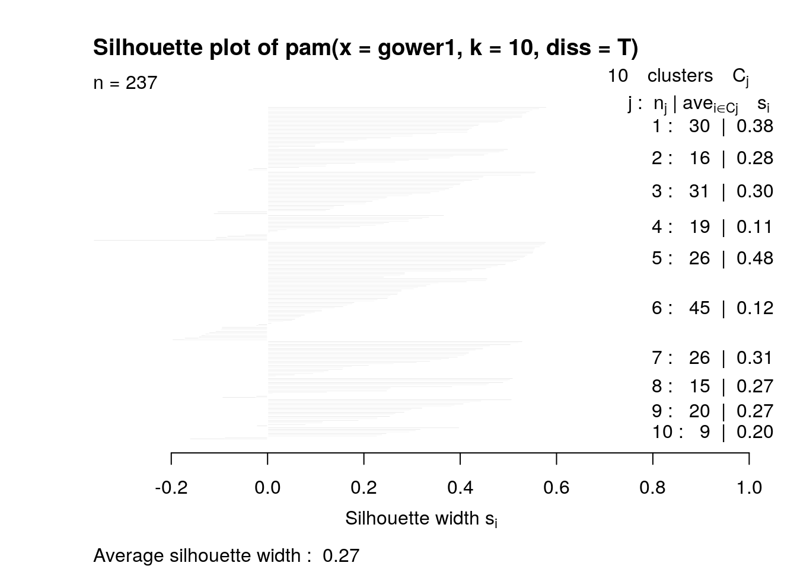

## My 2 datasets from countyhealthrankings.org were adapted
## from the 2020 County Health Rankings in order to only
## contain the Texas counties data. The common ID variable
## between the 2 datasets is Texas county name. The first
## dataset called 'Additional Measure Data' contains 3 numeric
## variables which are 'Percent.Not.Proficient.in.English',
## 'Percent.Rural', and 'Life.Expectancy'.
## 'Percent.Not.Proficient.in.English' is the percentage of
## residents in the county who are not fluent in English.
## 'Percent.Rural' is the percentage of the county that is
## classified as rural. 'Life.Expectancy' is the average life
## expectancy for individuals of all race backgrounds in the
## county. The second dataset 'Ranked Measure Data' is from
## the same 2020 report, and was simplified to contain 1
## categorical variable 'Quartile...PCP.Ratio' which is
## categorized '1, 2, 3, or 4' depending on the county's PCP
## (primary healthcare provider, aka doctors) ratio rank
## within the state. Higher quartile rank correlates to a
## higher PCP:resident ratio, meaning that there are less
## primary care providers for a larger population of
## residents.
## I am interested in this data because my Senior
## Undergraduate Thesis explores the impacts of telemedicine
## on access to care. I expect to see a negative/indirect
## association between 'Percent.Not.Proficient.in.English' and
## 'Life.Expectancy'. I also expect to see 'Life.Expectancy'
## increase as the 'Quartile...PCP.Ratio' increases.
library(dplyr)
library(tidyverse)
dataset1 <- read.csv("data1rankedmeasuredata.csv", header = TRUE)
head(dataset1)## County Quartile...PCP.Ratio
## 1 Anderson 3
## 2 Andrews 2
## 3 Angelina 1
## 4 Aransas 3
## 5 Archer 2
## 6 Armstrong 4dataset2 <- read.csv("data2-addlmeasuredata.csv", header = TRUE)
head(dataset2)## County Percent.Not.Proficient.in.English Percent.Rural Life.Expectancy
## 1 Anderson 3 67.1 73.4
## 2 Andrews 8 16.5 77.5
## 3 Angelina 4 43.1 76.1
## 4 Aransas 2 27.3 77.9
## 5 Archer 1 89.0 78.8
## 6 Armstrong 1 100.0 77.4# My datasets were already tidy. So, I will be using
# 'pivot_wider()' to make 'dataset1' untidy, and then use
# 'pivot_longer()' in order to re-tidy it.
# make dataset1 untidy via 'pivot_wider()'
untidy1 <- dataset1 %>% pivot_wider(names_from = "County", values_from = "Quartile...PCP.Ratio")
# re-tidy dataset1 via 'pivot_longer()'
untidy1 %>% pivot_longer(cols = c(1:254), names_to = "County",
values_to = "Quartile PCP Ratio")## # A tibble: 254 x 2
## County `Quartile PCP Ratio`
## <chr> <int>
## 1 Anderson 3
## 2 Andrews 2
## 3 Angelina 1
## 4 Aransas 3
## 5 Archer 2
## 6 Armstrong 4
## 7 Atascosa 4
## 8 Austin 4
## 9 Bailey 2
## 10 Bandera 3
## # … with 244 more rows# dataset1 is now re-tidy, back to original# Both datasets began with 254 observations- 1 for each of
# the 254 counties in Texas. The ID's for the counties were
# spelled and capitalized consistently across the 2 datasets.
# I chose to use 'inner_join'. 'inner_join' works by dropping
# observation ID's that are missing in either dataset. Rather
# than introducing NA observations, any and all unmatched
# observations are dropped. Since both of my datasets both
# had all of the same observation ID's present, all of the
# join options would have yielded the same result: 254
# observations of all of the counties. 'inner_join' results
# will show the same number of observations as the number of
# ID intersections between the 2 datasets. This is evidenced
# here: the 2 datasets share 254 county ID's, and the joined
# dataset shows 254 observations.
# No observations were dropped after joining, since both
# datasets had the same observations. Observations will be
# removed in the next step (Wrangling) and the potential
# consequences will be discussed there.
fulldata <- dataset1 %>% inner_join(dataset2)
head(fulldata)## County Quartile...PCP.Ratio Percent.Not.Proficient.in.English
## 1 Anderson 3 3
## 2 Andrews 2 8
## 3 Angelina 1 4
## 4 Aransas 3 2
## 5 Archer 2 1
## 6 Armstrong 4 1
## Percent.Rural Life.Expectancy
## 1 67.1 73.4
## 2 16.5 77.5
## 3 43.1 76.1
## 4 27.3 77.9
## 5 89.0 78.8
## 6 100.0 77.4# I used 'filter' and 'na.omit' to omit any observation rows
# that had 'NA' in any column. Originally, there are 254
# counties/observations in Texas in the joined dataset, but
# 'na.omit' removed 17 observations, resulting in 237
# counties in the filtered dataset. For example, county
# 'Borden' was omitted because it contained 'NA' in the
# 'Quartile...PCP.Ratio' variable. Potential problems in a
# real-life context include omission of crucial healthcare
# data, which will lead to a lack of knowledge and study of
# certain counties, possibly resulting in a lack of
# healthcare reform, which may manifest, for example, as
# fewer tax dollar dedications to improving medical
# facilities in these counties.
fulldataUSE <- fulldata %>% filter(!is.na(Quartile...PCP.Ratio)) %>%
filter(!is.na(Percent.Not.Proficient.in.English)) %>% filter(!is.na(Percent.Rural)) %>%
filter(!is.na(Life.Expectancy))
glimpse(fulldataUSE)## Rows: 237
## Columns: 5
## $ County <fct> Anderson, Andrews, Angelina, Aransa…
## $ Quartile...PCP.Ratio <int> 3, 2, 1, 3, 2, 4, 4, 4, 2, 3, 3, 1,…
## $ Percent.Not.Proficient.in.English <int> 3, 8, 4, 2, 1, 1, 4, 5, 13, 1, 5, 0…
## $ Percent.Rural <dbl> 67.1, 16.5, 43.1, 27.3, 89.0, 100.0…
## $ Life.Expectancy <dbl> 73.4, 77.5, 76.1, 77.9, 78.8, 77.4,…# 1) mutate: making the categorical variable
# 'Quartile...PCP.Ratio' clearer: changing number values to
# word values higher number value for quartile correlates to
# higher 'provider:resident' ratio, which is less ideal for
# patient care. So, '1' correlates to 'Excellent' and '4'
# correlates to 'Poor'.
data <- fulldataUSE %>% mutate(Quartile...PCP.Ratio = recode(Quartile...PCP.Ratio,
`1` = "excellent", `2` = "good", `3` = "satisfactory", `4` = "poor"))
head(data)## County Quartile...PCP.Ratio Percent.Not.Proficient.in.English
## 1 Anderson satisfactory 3
## 2 Andrews good 8
## 3 Angelina excellent 4
## 4 Aransas satisfactory 2
## 5 Archer good 1
## 6 Armstrong poor 1
## Percent.Rural Life.Expectancy
## 1 67.1 73.4
## 2 16.5 77.5
## 3 43.1 76.1
## 4 27.3 77.9
## 5 89.0 78.8
## 6 100.0 77.4# 2) mutate: generate a variable that is a function of
# another variable the average life expectancy in Texas
# overall is 79.1 years. I generated a new variable
# 'LEcomparedtoTX' to compare each county's life expectancy
# to Texas' overall. A value of <1 indicates an average life
# expectancy lower than that of Texas' life expectancy. A
# value of >1 indicates better county life expectancy than
# the state's life expectancy overall.
head(data %>% mutate(LEcomparedtoTX = Life.Expectancy/79.1))## County Quartile...PCP.Ratio Percent.Not.Proficient.in.English
## 1 Anderson satisfactory 3
## 2 Andrews good 8
## 3 Angelina excellent 4
## 4 Aransas satisfactory 2
## 5 Archer good 1
## 6 Armstrong poor 1
## Percent.Rural Life.Expectancy LEcomparedtoTX
## 1 67.1 73.4 0.9279393
## 2 16.5 77.5 0.9797724
## 3 43.1 76.1 0.9620733
## 4 27.3 77.9 0.9848293
## 5 89.0 78.8 0.9962073
## 6 100.0 77.4 0.9785082# 1-5) use 5 unique functions (mean, sd, etc) inside
# 'summarize()'
# 1) mean % rural across counties = 52.33038%
data %>% summarize(mean_percent_rural = mean(Percent.Rural, na.rm = T))## mean_percent_rural
## 1 52.33038# 2) number of distinct life expectancy values = 87 distinct
# year values
data %>% summarize(n_distinct(Life.Expectancy))## n_distinct(Life.Expectancy)
## 1 87# 3) minimum county life expectancy value = 71.9 years
data %>% summarize(min(Life.Expectancy))## min(Life.Expectancy)
## 1 71.9# 4) maximum county % not proficient in English value = 30%
data %>% summarize(max(Percent.Not.Proficient.in.English))## max(Percent.Not.Proficient.in.English)
## 1 30# 5) median % rural population value = 50.2%
data %>% summarize(median(Percent.Rural))## median(Percent.Rural)
## 1 50.2# 6-7) 2 statistics grouped by categorical variable
# 6) mean life expectancy, grouped by 'Quartile...PCP.Ratio'
# categorical groups, arranged by descending average life
# expectancy (high->low).
data %>% group_by(Quartile...PCP.Ratio) %>% summarize(mean_LifeExpectancy = mean(Life.Expectancy,
na.rm = T)) %>% arrange(desc(mean_LifeExpectancy))## # A tibble: 4 x 2
## Quartile...PCP.Ratio mean_LifeExpectancy
## <chr> <dbl>
## 1 excellent 78.1
## 2 good 78.0
## 3 satisfactory 77.1
## 4 poor 76.7# 7) mean percentage of rural population, grouped by
# 'Quartile...PCP.Ratio' categorical groups, arranged by
# descending percentage of rural.
data %>% group_by(Quartile...PCP.Ratio) %>% summarize(mean_PercentRural = mean(Percent.Rural,
na.rm = T)) %>% arrange(desc(mean_PercentRural))## # A tibble: 4 x 2
## Quartile...PCP.Ratio mean_PercentRural
## <chr> <dbl>
## 1 good 60.3
## 2 poor 59.1
## 3 satisfactory 55.6
## 4 excellent 34.2# 8-9) more summary statistics
# 8) mean life expectancy for counties with 25% or more of
# the population not proficient in English = 83.125 years.
data %>% filter(Percent.Not.Proficient.in.English >= 25) %>%
summarize(mean(Life.Expectancy))## mean(Life.Expectancy)
## 1 83.125# 9) mean life expectancy with a minimal rural population
# percentage (0-10%) = 79.42222 years.
data %>% filter(between(Percent.Rural, 0, 10)) %>% summarize(mean(Life.Expectancy))## mean(Life.Expectancy)
## 1 79.42222# 10) correlation matrix of numeric variables
cormatrix <- data %>% select_if(is.numeric) %>% cor(use = "pair")
cormatrix## Percent.Not.Proficient.in.English
## Percent.Not.Proficient.in.English 1.0000000
## Percent.Rural -0.3175967
## Life.Expectancy 0.3960422
## Percent.Rural Life.Expectancy
## Percent.Not.Proficient.in.English -0.3175967 0.3960422
## Percent.Rural 1.0000000 -0.1726833
## Life.Expectancy -0.1726833 1.0000000# 4.a) correlation heatmap of numeric variables
tidycor <- cormatrix %>% as.data.frame %>% rownames_to_column("var1") %>%
pivot_longer(-1, names_to = "var2", values_to = "correlation")
tidycor %>% ggplot(aes(var1, var2, fill = correlation)) + geom_tile() +
scale_fill_gradient2(low = "red", mid = "white", high = "blue") +
geom_text(aes(label = round(correlation, 2)), color = "black",
size = 4) + theme(axis.text.x = element_text(angle = 90,
hjust = 1)) + coord_fixed()
# 1st of 2 ggplot: Rural Population Percentage vs. Life
# Expectancy, colored by PCP Ratio Quartile geom_point
# changed theme element: legend text color & size changed
# color for mapping: changed color of axis labels for mapping
# x-axis 'Rural Population' add more x-axis tick marks, by
# 10's plot summary: The graph shows a minimal-to-no
# correlation between rural percentage and life expectancy.
# As you move right-ward on the x-axis (rural population
# increases), life expectancy remains randomly scattered,
# although the trend line appears to be slightly negative.
# There also appears to be some relationship between PCP
# ratio and rural population, with noticeable changes
# regarding 'excellent' and 'poor' PCP ratios. As you move
# right-ward on the x-axis (rural population increases), the
# presence of red 'excellent' dots decreases, and the
# presence of 'poor' dots increases, but the amount of other
# PCP ratios (good, satisfactory) remains the same. Finally,
# there appears to be no correlation between PCP ratio and
# life expectancy. As you move up the y-axis (life expectancy
# increases), there are dots of all 4 colors, indicating no
# correlation between PCP ratio and life expectancy. These
# results are further supported by the faceted graph.
plot1 <- ggplot(data = data, aes(x = Percent.Rural, y = Life.Expectancy,
color = Quartile...PCP.Ratio)) + geom_point(size = 3, alpha = 0.4) +
ggtitle("Texas Counties: Rural Populations vs. Life Expectancy, colored by PCP Ratio") +
ylab("Life Expectancy (years)") + xlab("Rural Population of the County (%)") +
theme(legend.text = element_text(colour = "blue", size = 10)) +
scale_x_continuous(breaks = seq(0, 100, 10)) + theme(axis.text.x = element_text(face = "bold",
color = "#993333"))
plot1
# plot faceted by PCP Ratio
plot1 + facet_wrap(~Quartile...PCP.Ratio)
# 2nd of 2 ggplot: Non-Fluent English Percentage vs. Percent
# Rural, faceted by PCP Ratio
# different geom: geom_bar changed theme element:
# theme_minimal changed color of mapping: changed color of
# x-axis ticks used stat='summary' function plot summary:
# Overall, for all PCP ratio groups, as the percentage of
# non-English speakers increases, the rural population
# decreases, particularly for counties with a 'good' PCP
# ratio. Although, the good PCP ratio counties have an
# outlier in the trend-line at the observation of 30%
# non-English population. There is no correlation between
# non-English population and PCP ratio- for example: 30%
# non-English population counties exist in the poor,
# satisfactory, and good PCP ratio categories. Excellent PCP
# ratio counties have the lowest proportions of rural
# populations, on average. For poor PCP ratio counties, rural
# population remains about constant as non-English population
# increases, until a non-English percentage of about 7% where
# the rural population percentage begins to drop.
data %>% ggplot(aes(Percent.Not.Proficient.in.English, Percent.Rural)) +
geom_bar(stat = "summary") + facet_wrap(~Quartile...PCP.Ratio) +
ggtitle("Texas Counties: Non-English Populations vs. Rural Populations, faceted by PCP Ratio") +
ylab("Rural Population of the County (%)") + xlab("Non-Fluent in English Population of the County (%)") +
theme_minimal() + theme(axis.text.x = element_text(face = "bold",
color = "#993333"))
# using PAM
library(cluster)
# modify daa by removing categorical variables, leaving
# numerical variables only, find gower dissimilarities
data2 <- data %>% mutate_if(is.character, as.factor) %>% column_to_rownames("County") %>%
select(-Quartile...PCP.Ratio)
gower1 <- daisy(data2, metric = "gower")
# using silhouette width:
sil_width <- vector()
for (i in 2:10) {
pam_fit <- pam(gower1, diss = TRUE, k = i)
sil_width[i] <- pam_fit$silinfo$avg.width
}
# plot: which k value to pick
ggplot() + geom_line(aes(x = 1:10, y = sil_width)) + scale_x_continuous(name = "k",
breaks = 1:10)
# yields k=10 is the best cluster value
# now, use gower dissimilarities to perform PAM clustering
pam10 <- pam(gower1, k = 10, diss = T)
# plot to interpret fit
plot(pam10, which = 2)
# final medoids yields Hopkins, Pecos, Nacogdoches, Milam,
# Van Zandt, Colorado, Frio, Newton, Midland, Haskell
data %>% slice(pam10$id.med)## County Quartile...PCP.Ratio Percent.Not.Proficient.in.English
## 1 Robertson poor 2
## 2 Ochiltree satisfactory 11
## 3 Stephens satisfactory 2
## 4 Lipscomb good 4
## 5 Real satisfactory 2
## 6 Cooke satisfactory 4
## 7 San Patricio satisfactory 4
## 8 Brazos excellent 5
## 9 Pecos good 8
## 10 Garza poor 21
## Percent.Rural Life.Expectancy
## 1 73.9 75.8
## 2 13.9 77.3
## 3 39.4 76.1
## 4 100.0 79.7
## 5 100.0 75.6
## 6 59.0 77.6
## 7 19.7 76.2
## 8 12.1 81.3
## 9 39.8 78.0
## 10 22.3 79.6# PAM summary: The PCP ratio variable was removed, since it
# is a categorical variable. The silhouette width method
# yielded that k=10 clusters was the best fit. Counties
# Hopkins, Pecos, Nacogdoches, Milam, Van Zandt, Colorado,
# Frio, Newton, Midland, Haskell were the best
# representations of their clusters.